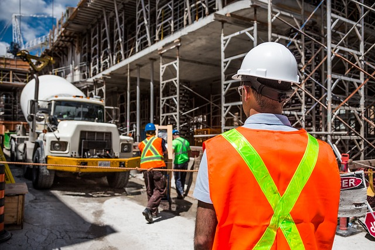

Depending on the construction service you are seeking from B.A.K. (or from elsewhere), you may have come across the term owner's representative in your search. Now most people are not well aware of the process behind the typical construction project, so this article is here to inform on what exactly an owner's rep is, and their role in these specific construction procedures.
With our help, you will soon be able to advocate for the exact type of construction manager you seek.
For starters, construction management is an utility service often specialized in handling larger construction projects, but not neccessarily. The primary intention of construction management regards a company extending a seasoned project manager who acts as an owner's representative for the property owner or estate.
An owner's representative fundamentally assists the property's renovation or construction in place of the owner or estate. Similar to a general contractor, owner's reps regulate and hire subcontractors during the procedural labor of construction, but their responsibilities involve far more oversight. Their tasks can include, but are not limited to, selecting project sites, ensuring proper licensing and permits for the project, overseeing safety, deciding on architectural and design choices, in addition to all facets of the actual construction.
Compared to general contractor, an owner's representative asserts more weight in the decision making process.
If you are a property owner or project manager who desires a more hands-on approach to construction or renovation, or are considering smaller construction touchups, consider simply hiring general contracting assistance.
On the other hand, for those who seek assistance on every facet of the construction process, an owner's representative might be a better fit for you. If you are not knowledgable about legal fees and regulations, safety management protocols, or the proper steps to securing licensing/property rights, an owner's representative is a especially suitable aide for you. In scenarios where resources are limited or restricted, owner's representatives, on your behalf may swiftly decide on appropriate budgeting allocations.
For those who represent a good fit, owner's representatives provide a valuable asset in terms of acclimation and skill level in the industry. Often times, homeowners, business owners, or any interested parties, feel unfit to decide on matters regarding property acquisition, and its respective development or renovation. Owner's representatives, on the other hand, bridge that barrier of knowledgable and make sure to speak for your interests during the entire process of property acquisition/revitalization. They ensure you are handling all related matters through the appropriate means and channels, while ensuring you of quality at the end result.
back to home